슬개골 탈구 수술
누적 3,000건 이상. 슬개골 탈구 클리닉 안내. 본원에서 슬개골 탈구 수술 후 1년 이내 재발하면 재진단 결과에 따라 추가 비용 없이 재수술해 드립니다. 외부 요인에 의한 재발은 치료비가 발생할 수 있습니다.
일산 킨텍스로 · 정형외과 수술 특화 동물병원
사람의 일생에서 동물은 일부지만, 동물의 일생에서 당신은 전부입니다.
2015년 개원 이래 강아지 슬개골 탈구, 십자인대 파열, 고관절, 골절 수술을 중점적으로 진료해 왔습니다. 정형외과 수술 후 당일 퇴원이 가능합니다.
3,000건 넘게 수술해 봤기 때문에, 수술이 필요 없는 아이도 정확히 구분합니다.
HOSPITAL TOUR
스타필드마켓 일산 지하 2층, 주차장에서 바로 이어지는 곳에 있습니다. 밝고 깨끗한 공간에서 아이와 보호자 모두 편안하게 진료받으실 수 있습니다.
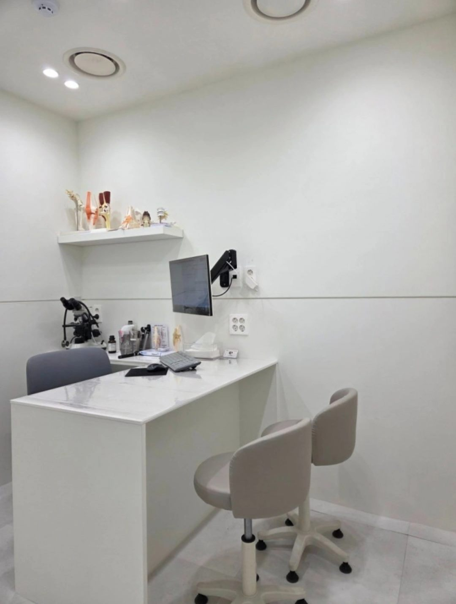
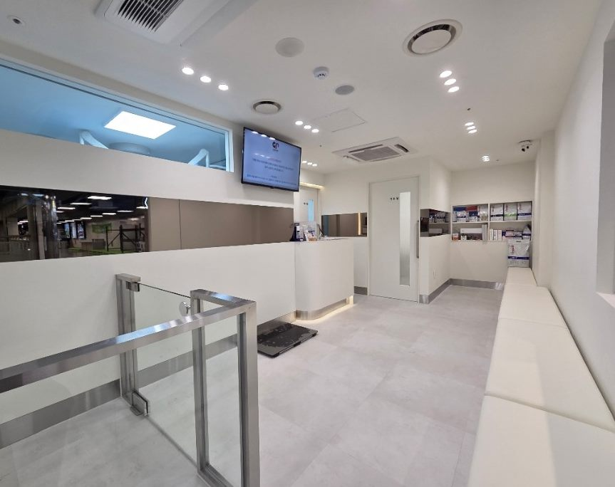
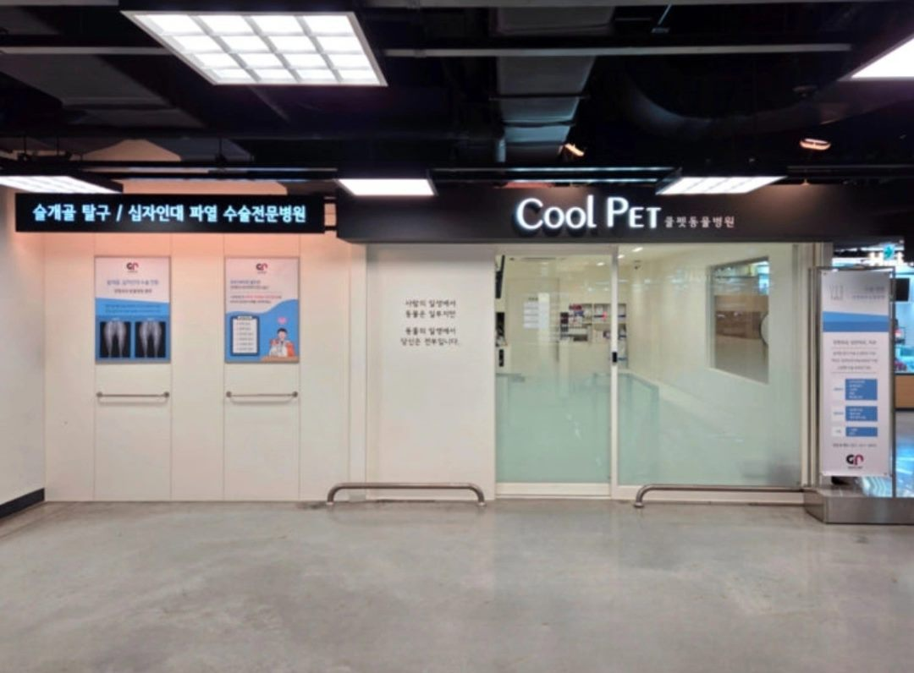
SURGERY
다른 동물병원에서도 수술을 의뢰하는 정형외과 수술 특화 병원입니다.
누적 3,000건 이상. 슬개골 탈구 클리닉 안내. 본원에서 슬개골 탈구 수술 후 1년 이내 재발하면 재진단 결과에 따라 추가 비용 없이 재수술해 드립니다. 외부 요인에 의한 재발은 치료비가 발생할 수 있습니다.
누적 500건 이상. 3kg 이하 소형견은 더 안정적인 hTPLO(반원형 TPLO)로, 45kg 대형견까지 수술합니다. 십자인대 파열 클리닉 안내
두 질환이 함께 있는 경우, 아이의 뼈 모양과 상태에 따라 한 번의 수술로 동시에 교정할 수 있는지 상담해 드립니다.
고관절 수술 누적 300건 이상. 골절 수술과 뼈 기형 교정 수술을 진행합니다. 골절 수술 클리닉 안내
BEFORE SURGERY
슬개골 탈구가 있다고 모두 수술하지 않습니다. 엑스레이 결과와 함께 걸음걸이, 통증, 나이, 체중을 직접 보고, 수술이 꼭 필요한지부터 설명해 드립니다.
1~2기이고 통증이나 절뚝임이 없다면, 바로 수술하기보다 생활 관리와 정기 검진으로 지켜보기를 권합니다.
다리를 들고 다니거나 자주 절뚝이는 경우, 탈구가 심해 걸음이 불편한 경우, 십자인대 파열이 함께 있는 경우에는 수술을 상담해 드립니다.
설명을 듣고 충분히 고민하신 뒤 결정하셔도 됩니다. 궁금한 점은 언제든 다시 물어봐 주세요.
ABOUT TPLO
무릎 안에서 정강이뼈가 앞쪽으로 밀리지 않도록 잡아 주는 줄(십자인대)이 닳거나 끊어진 상태를 말합니다.
TPLO 수술은 인공인대를 넣지 않고 경골 고원의 각도(TPA)를 조절해, 십자인대 없이도 정상적으로 걸을 수 있도록 돕는 수술입니다.

CASES
본원에서 진행한 수술의 엑스레이 사진입니다.

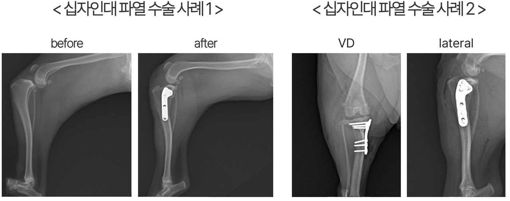
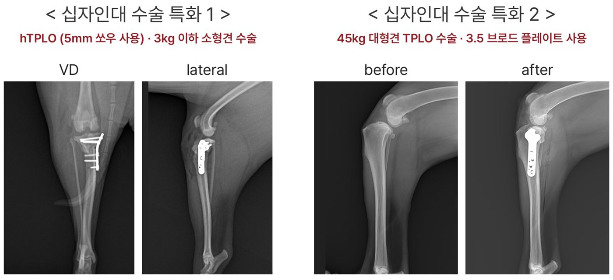
EQUIPMENT
마취와 수술 중 상태 변화를 바로 확인하고 대응할 수 있도록 갖췄습니다.
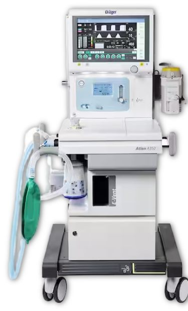
사람 대학병원에서 쓰는 호흡마취기입니다. 수술 중 환자 상태를 빠르게 파악하고, 수술 전후 폐 합병증 위험을 줄이는 데 도움이 됩니다.
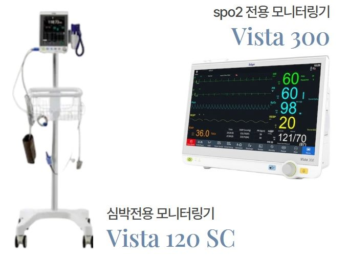
마취 중에도 SpO2와 심박 변화를 바로 확인합니다. 심장 질환이 있는 아이의 수술 마취가 걱정되는 보호자분도 상담해 주세요.
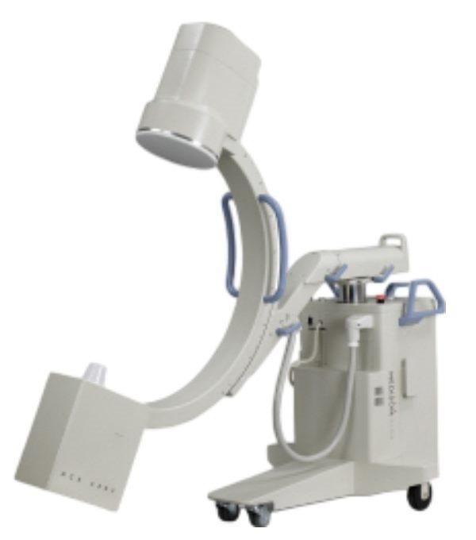
골절, 슬개골, 십자인대 수술 중 뼈와 임플란트 위치를 실시간으로 확인하고 조정합니다.
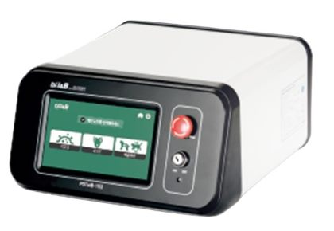
통증 관리와 재활을 위한 물리치료 레이저입니다. 수술 전후 부종과 회복 관리에 사용합니다.
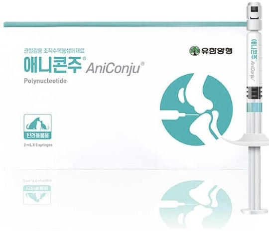
PN(폴리뉴클레오타이드) 성분의 동물용 관절 주사 의료기기입니다. 노령견·노령묘의 관절 불편이나 수술 후 관리가 필요할 때 상담해 주세요.
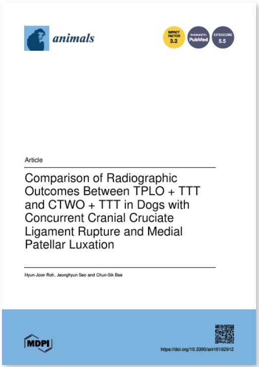
DOCTOR
정형외과 수술 전문 수의사
노현준 원장이 직접 연구·집필한 논문이 국제 학술지 Animals(MDPI)에 게재되었습니다. 소형견에게 함께 생길 수 있는 슬개골 탈구와 십자인대 파열을 한 번의 수술로 동시 교정하고, TPLO와 CTWO 수술법의 결과를 비교·분석했습니다.
Comparison of Radiographic Outcomes Between TPLO + TTT and CTWO + TTT in Dogs with Concurrent Cranial Cruciate Ligament Rupture and Medial Patellar Luxation (Hyun-Joon Roh, Jeonghyun Seo, Chun-Sik Bae) · doi.org/10.3390/ani16182912
이 논문은 언론에도 소개되었습니다. 소형견에게 함께 오는 십자인대 파열과 슬개골 탈구를 한 번에 수술할 때, TPLO가 다리뼈 길이와 슬개골 위치를 지키는 데 유리했다는 연구 결과입니다.
이로운넷, 2026.11.18 · 쿨펫외과동물병원 킨텍스로점 노현준 원장, 소형견 십자인대 수술 비교연구 국제학술지 'Animals' 게재
2026년 11월 29일 부천대학교 소사캠퍼스에서 열리는 수의정형외과 아카데미 컨퍼런스에 노현준 원장이 강사로 참여합니다. 임상수의사와 수의대생을 대상으로 FHNO, MPL(TTT 포함), TPLO, AAI 수술 과정을 카데바로 실시간 시연하는 수의정형외과 교육 행사입니다.
데일리벳, 2026.11.18 · ‘FHNO·MPL·TPLO·AAI 수술 과정 실시간 공개’ 수의정형외과 컨퍼런스 29일 개최
CHECK-UP
"우리 아이의 검진은 언제가 마지막이었나요?" 1년에 한 번, 나이에 맞춘 건강검진을 권합니다.
| 프로그램 | 권장 나이 | 강아지 | 고양이 |
|---|---|---|---|
| 기본 | 3살 이하 | 신체검사, 혈청화학검사, CBC, 흉부·복부·관절 X-ray, 심장사상충 검사, 방광 초음파 | 신체검사, 혈청화학검사, CBC, 흉부·복부·관절 X-ray, FSAA 검사, 방광 초음파 |
| SILVER | 5살 이하 | 기본 항목 + 소변검사, 키트검사·염증검사(심장사상충, CRP), 복부 초음파, 항체검사(파보, 홍역) | 기본 항목 + 소변검사, 키트검사·염증검사(pro-BNP), 복부 초음파, 항체검사(범백, 허피스, 칼리시) |
| GOLD | 7살 이상 | SILVER 항목 + 심장사상충·진드기 검사, 심전도, 조기 심장검사, 갑상선 호르몬, 8종 항체, 안압, 눈물량, 조기 신장검사 | SILVER 항목 + 갑상선 호르몬, 혈청화학검사 24종, 심전도, 조기 신장검사(SDMA), 조기 심장검사(pro-BNP), 6종 항체, 안압, 눈물량 |
| SPECIAL | 10살 이상 | GOLD 항목 + 종양검사, 에디슨병 감별, 췌장염 검사 | |
검진 결과는 2주 안에 메일로 보내 드립니다. 자세한 사항은 데스크에 문의해 주세요.
FAQ
아닙니다. 1~2기이고 통증이나 절뚝임이 없다면 수술보다 관리를 먼저 권합니다. 증상이 있거나 탈구가 심해 걸음이 불편할 때 수술을 상담해 드립니다. 아이를 직접 보고 수술이 필요한지부터 설명해 드립니다.
정형외과 수술 후 당일 퇴원이 가능하도록 수술을 진행합니다. 아이가 집에서 편안하게 회복할 수 있도록 돕습니다. 아이 상태에 따라 달라질 수 있으니 진료 시 상담해 주세요.
아이의 뼈 모양과 상태에 따라 한 번의 수술로 동시 교정이 가능한 경우가 있습니다. 동시 수술이 가능한지 진료 후 상담해 드립니다.
3kg 이하 소형견은 5mm 쏘우를 사용하는 hTPLO로, 45kg 대형견은 3.5 브로드 플레이트를 사용한 TPLO로 수술한 사례가 있습니다. hTPLO(반원형 TPLO)는 쏘우를 더 작게 하고 자르는 원의 중심을 아래로 내려 위쪽 뼈 조각과 경골 조면을 더 크게 남기고, 돌려야 하는 호의 길이와 경골 중심축이 뒤로 넘어가는 정도도 줄여 국내에 많은 소형견에서 더 안정적으로 수술할 수 있습니다. 경골 조면의 면적도 커서 슬개골 탈구 수술을 같이 해야 하는 소형견에게 효과적입니다. TPLO와 hTPLO 차이 자세히 보기
본원에서 슬개골 탈구 수술 후 1년 이내에 재발하면 재진단 결과에 따라 추가 비용 없이 재수술해 드립니다. 외부 요인에 의한 재발은 치료비가 발생할 수 있습니다.
네. 고양이 건강검진 프로그램을 따로 운영하며, 노령묘 관절 관리도 상담해 드립니다.
오후 2시~4시는 수술시간이라 진료가 어려울 수 있습니다. 내원 전에 031-911-9975로 미리 연락해 주세요.
VISIT
수술시간(오후 2~4시)에는 진료가 어려울 수 있으니 내원 전에 연락 부탁드립니다.
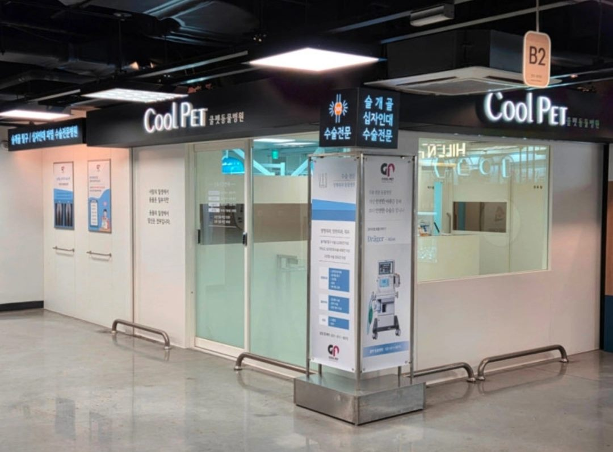